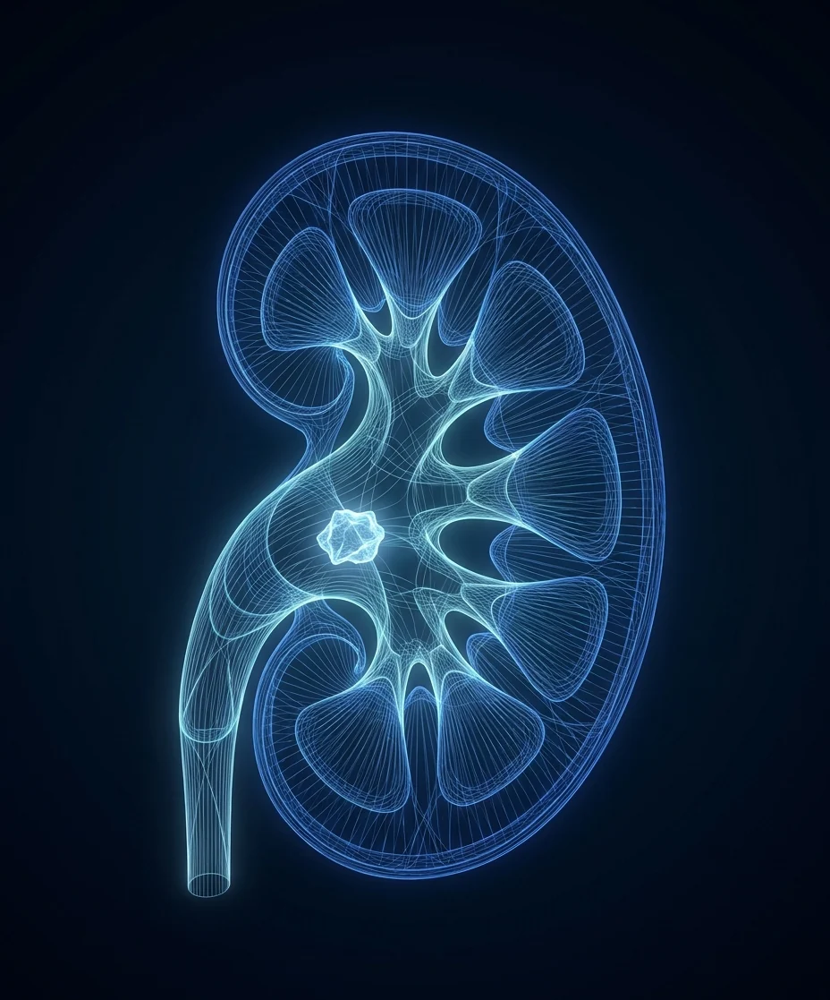

Kidney stone size chart:
will it pass?
The CT report gives a size in millimeters and nobody explains it. Here is what the number means for whether the stone passes, how long that takes, and when it is time to treat. Where the stone sits and whether the pain is controlled matter as much as size.

Medically reviewed by Hari Sawkar, MD, board-certified urologist · Updated October 2026
The chart
Odds and timelines are rounded from published series, and all of them shift with where the stone sits. Millimeters are hard to picture, so each row includes an everyday comparison, and shows how the conversation changes as the number climbs.
| Stone size | About the size of | Odds it passes on its own | Typical time to pass | What usually happens |
|---|---|---|---|---|
| Under 2 mm | A grain of coarse sand | Very high, about 9 in 10 | About a week | Fluids, pain control, and a strainer; a follow-up image confirms it is gone. |
| 2–4 mm | A sesame seed to a small peppercorn | About 8 in 10 | One to two weeks | The same, plus a medication that relaxes the ureter (tamsulosin) to speed it along. |
| 5–6 mm | A peppercorn to a pencil eraser | Roughly half to 6 in 10 | Two to four weeks | A trial of passage with tamsulosin if pain is controlled and there is no infection; treated if it stalls. |
| 7–9 mm | A pea | About 1 in 3 or fewer | Four to six weeks, if at all | Most are treated with ureteroscopy or shockwave rather than waited out. |
| 10 mm and up | A chickpea, or larger | Low, under 1 in 5 | Not expected | Treated: ureteroscopy with laser or shockwave lithotripsy, chosen by location and density. |
| 20 mm and up, or staghorn | A grape, or larger | Will not pass | Not expected | Percutaneous nephrolithotomy (PCNL), a keyhole procedure through the back. |
Ranges from published CT-based series and the AUA and EAU stone guidelines, rounded for usefulness. Location, pain, infection, and kidney function change the plan more than a millimeter does.
How big is a 4, 5, or 6 mm kidney stone?
The ureter, the tube that carries urine from the kidney to the bladder, is only a few millimeters wide, which is why a single millimeter changes the odds so much. Here is what common sizes compare to, and what each usually means.
How big is a 3 mm kidney stone?
About the size of a sesame seed. Stones this size pass on their own about 8 times in 10, usually within one to two weeks, and fluids, pain control, and a strainer are often all it takes.
How big is a 4 mm kidney stone?
About the size of a small peppercorn. Most 4 mm stones still pass on their own, roughly 8 in 10, typically within one to two weeks, and tamsulosin can make the trip easier.
How big is a 5 mm kidney stone?
About the size of a peppercorn. Roughly half to 6 in 10 pass on their own, usually over two to four weeks. A trial of passage is reasonable if pain is controlled and there is no fever.
How big is a 6 mm kidney stone?
About the width of a pencil eraser. The odds of passing are roughly half, better when it sits low near the bladder, and it can take up to four weeks. If it stalls, ureteroscopy or shockwave finishes the job.
How big is an 8 mm kidney stone?
About the size of a pea. About 1 in 3 or fewer pass on their own, and the attempt can take weeks of pain, so most 8 mm stones are treated with ureteroscopy or shockwave lithotripsy.
How big is a 10 mm kidney stone?
About the size of a chickpea. Fewer than 1 in 5 pass, so treatment is the usual plan: laser ureteroscopy or shockwave, as an outpatient, home the same day.
Comparisons are approximate; your CT report gives the true size. Odds come from published CT-based series and shift with where the stone sits.
Location matters as much as size
A stone has to travel the length of the ureter, a tube only a few millimeters wide, to reach the bladder. The farther along it is on the CT, the better its odds, which is why two same-size stones can get opposite advice.
| Where the stone sits | Chance of passing | Worth knowing |
|---|---|---|
| In the kidney | Often stays put for years | Treated when it grows, causes pain or infection, or exceeds about 10 mm. |
| Upper ureter, near the kidney | Lower, around half for small stones | The longest way to travel. |
| Lower ureter, near the bladder | Highest, around 7 in 10 or more for stones under 6 mm | Tamsulosin helps most here. |
| At the bladder entrance | Usually passes within days once it reaches this point | Urgency and burning are common. |
Same published series, rounded. A stone in the lower ureter has done most of the work.
When a kidney stone is an emergency
Size alone is never the emergency, and neither is pain, however miserable. The emergency is obstruction plus infection: a stone blocking the ureter with infected urine trapped behind it, which can turn into sepsis quickly. It is drained the same day, usually with a small stent; the stone is treated once the infection clears.
The other reasons to stop waiting are about the kidney, not the stone: a blocked kidney that is your only one, kidney function slipping on labs, or pain and vomiting that make it impossible to stay hydrated. Any sign on this list means a same-day call or the emergency room, not another week of watching.
How stone size is measured
The number on your report is the stone's largest diameter on CT, the standard for sizing and locating stones. Ultrasound tends to overestimate by a millimeter or two and misses many stones in the ureter, so a 7 mm stone on ultrasound may be 5 mm on CT.
CT also reports density in Hounsfield units. Very dense stones tend to resist shockwave lithotripsy and are usually treated with a laser through a ureteroscope instead. Size says whether to treat; density helps decide how.
CT scan
The most accurate measurement, and the one study that sizes and locates every stone, including those still in the kidney.
Ultrasound
No radiation, so it is the right tool for follow-up and repeat checks. Less precise on size, and it can miss a stone in the ureter.
The strainer test
Catching the stone lets the lab identify its type, and the type drives prevention: what to drink, what to eat less of, and whether a medication would help.
What to do with your number
Pair size with location and how you feel, and the path usually gets obvious.
Under 5 mm
Pass it. Fluids, a strainer, tamsulosin if it was prescribed, and imaging in two to four weeks to confirm it is out. What passing a stone involves.
5 to 10 mm
A decision visit. Trial of passage versus treatment, decided by location, pain, and your schedule. Compare shockwave and ureteroscopy before you come in.
10 mm and up
Book treatment. Ureteroscopy with a laser or shockwave lithotripsy, both outpatient, both home the same day. See how each is done.
Any size with fever
Go the same day. The emergency room or a same-day office visit, whichever is faster. An infected, blocked kidney does not wait.
Common questions about kidney stone size
Will a 5 mm kidney stone pass on its own
About half do, more if it sits low in the ureter, and a few weeks of tamsulosin improves the odds. If pain is controlled and there is no fever, a trial of up to about four weeks is reasonable, with imaging to confirm it is out.
How long does it take to pass a kidney stone
Roughly a week for stones under 2 mm, one to two weeks for 2 to 4 mm, and two to four weeks for 5 to 6 mm in published series. Stones that have not moved in four to six weeks usually need treatment.
What size kidney stone requires surgery
There is no single cutoff. Stones of 10 mm and up rarely pass and are usually treated; 7 to 9 mm stones are treated more often than not; any size is treated if there is infection, uncontrolled pain, or a threatened kidney.
Can a 10 mm kidney stone pass
Rarely, fewer than 1 in 5, and the attempt can take weeks of pain. Ureteroscopy with a laser or shockwave lithotripsy handles a 10 mm stone as an outpatient procedure.
Does drinking water help pass a kidney stone
Yes, within reason. Enough fluid to keep urine pale keeps the stream moving and is the foundation of prevention, but no amount of water moves a stone that is too large for the ureter.
What is the largest kidney stone that can pass
Stones up to about 6 mm pass regularly; 7 to 9 mm occasionally; anything larger almost never. The ureter is only a few millimeters wide, which is why size predicts passage so well.
How big is a 4 mm kidney stone
About the size of a small peppercorn. Most 4 mm stones pass on their own, roughly 8 in 10 in published series, usually within one to two weeks, and tamsulosin can shorten the wait.
How big is a 5 mm kidney stone
About the size of a peppercorn. Roughly half to 6 in 10 pass on their own over two to four weeks. A stone that has not moved by about four weeks, or any stone with a fever, is treated.
What is the average kidney stone size
Most stones found during an episode of stone pain are under about 6 mm, which is why so many pass on their own. Stones that stay in the kidney can grow much larger over years without causing symptoms.
Turn the number into a plan
Same-day and next-day appointments for stone pain, with your imaging reviewed at the visit. Medicare and most PPO plans accepted, telehealth available. For the fastest response, send the office a secure message; the reply comes back by text.
Chief of Urology, Providence St. Joseph Hospital · UroLift Center of Excellence · Orange County's highest-volume Aquablation surgeon